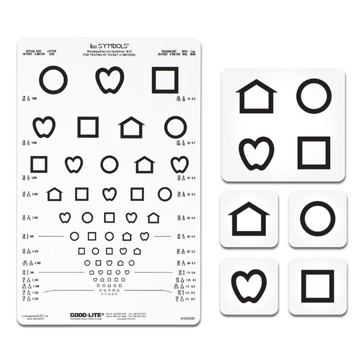

We attended a local blood pressure screening at a senior center in the area. We were able to screen multiple patients and record the results so they could pass that information along to their current health care providers. This experience yielded many opportunities to teach about the deviations from the normal blood pressure range, what could be causing it, and ways to correct it.
Every year the preschools in the area provide a vision screening for early detection for all of their students. We got to practice age appropriate techniques while still providing a useful service to detect any children with possible vision problems. Any child that presented like there may be a problem was then referred to an eye doctor and their parents were notified. Parents were also given a list of resources they could utilize for potentially getting help.
We participated in a Health fair at a local elementary school to teach children about the importance of proper nutrition and exercise. Using the MyPlate guidelines, we had age appropriate games made for the different grade levels to help them learn how to pick proper nutritional food, as opposed to junk food. It was a very interactive presentation that all the children seemed to enjoy and learn from.